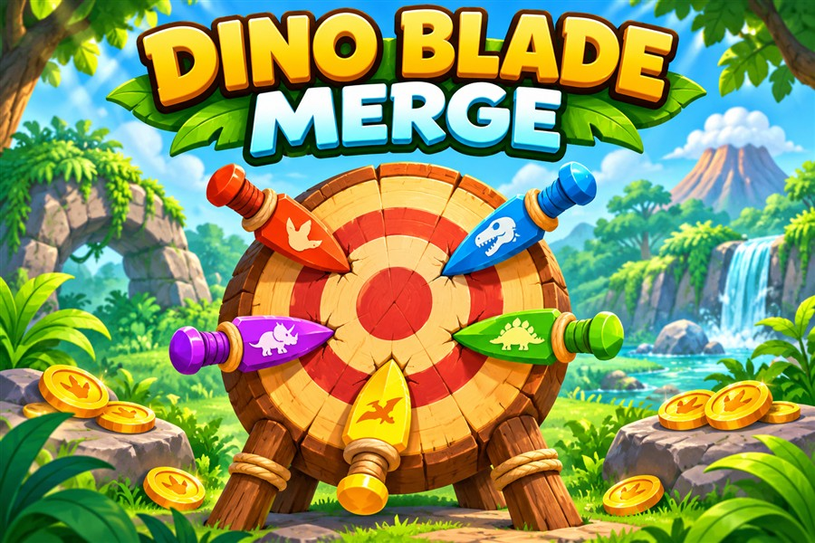

DINO BLADE MERGEFunde. Aponta. Evolui.
Junta lâminas iguais para desbloquear novos poderes. Lança contra o tronco e evita as lâminas já presas.

- Junta duas lâminas do mesmo nível para as melhorar.
- Mantém Lançar ou Espaço premido para disparar uma faca de cada vez.
- Acerta nos símbolos para apanhar moedas, lâminas ou um coração.
- No modo Desafio, evita também os espinhos vermelhos.